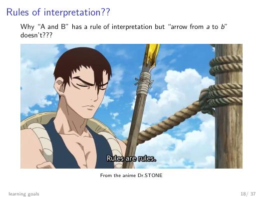
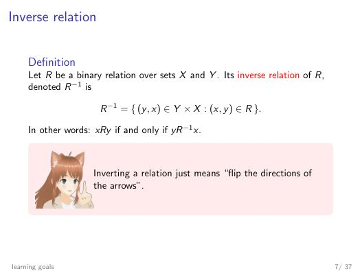
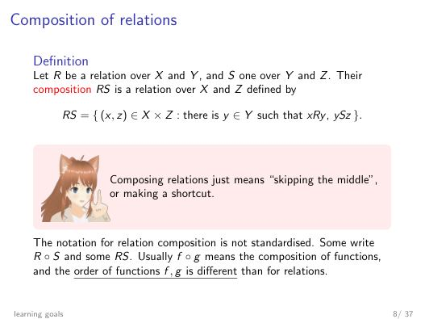
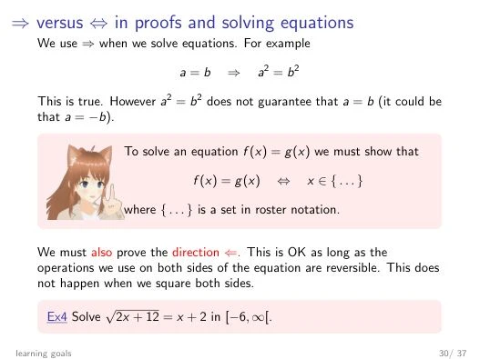

BM20A9200 数学A · 第 03 / 15 讲
第 3 讲 · 逆关系与合成、命题逻辑与真值表
Inverse and Composition of Relations, Propositions and Truth Tables
所属章节：第 1 章 集合、关系与逻辑
资料来源 · 4 项 / 已附 0 项
03-lesson.pdf未附原文件04-exercise.pdf未附原文件Lecture1_Sets, relations and graphs.pdf未附原文件Lecture2_Logic, propositions and representation of information.pdf未附原文件
未附文件仅列原始名称；版本与核对日期由维护者登记。
本节定位
第 3 讲有两个主题：先给关系加上两种“手术”——求逆（inverse）与合成（composition），再把“关系”升级为“命题”（proposition），引入 ∧、∨、¬、⇒、⇔ 与真值表。表面上是两件事，实质是同一件事：关系是集合，命题的真假也可以用集合来刻画。
从考试看，本讲对应第 1 题的“关系计算”和第 2 或第 3 题的“真值表”，几乎每年必出，且分值高（真值表常为 8 分）。真值表是整门课最机械的得分点，只要步骤规范就不会失分。
学完本节你应当能够：
- 写出逆关系 R⁻¹，并用“箭头反向”解释它
- 计算合成关系 RS，并说明“跳过中间点”的含义
- 证明 (RS)⁻¹ = S⁻¹R⁻¹，并解释为什么顺序要反转
- 判断一句话是不是命题，区分命题与开放公式（open formula）
- 写出 ∧、∨、¬、xor、⇒、⇔ 的真值表，并解释“前件为假时蕴含为真”
- 为含 2 个或 3 个原子命题的复合命题构造完整真值表（2ⁿ 行）
3.1 逆关系 R⁻¹
设 R 是 X 与 Y 之间的二元关系。它的逆关系定义是 R⁻¹ = { (y, x) ∈ Y × X : (x, y) ∈ R }，等价说法是 xRy 当且仅当 yR⁻¹x。求逆就是“把所有箭头的方向翻过来”，定义域与值域随之互换：R ⊆ X × Y 时 R⁻¹ ⊆ Y × X。
例（源文件 p8）：若 R 是 A→B 的一组箭头，则 R⁻¹ 把每条箭头的头尾对调；而 RS 表示“先走 R 再走 S”的捷径。常用性质：(R⁻¹)⁻¹ = R（翻两次回到原样），以及下一节要证的 (RS)⁻¹ = S⁻¹R⁻¹。第 12 讲会看到：用布尔矩阵表示关系时，R⁻¹ 的矩阵就是 R 的矩阵的转置。
3.2 合成关系 RS
设 R 是 X 与 Y 上的关系、S 是 Y 与 Z 上的关系。它们的合成是 X 与 Z 上的关系：RS = { (x, z) ∈ X × Z : 存在 y ∈ Y 使 xRy 且 ySz }。直观说法是“跳过中间点”“抄近路”：从 x 经 R 到某个 y，再经 S 到 z，就把 x 与 z 直接连起来。
记号并不统一：有人写 R ∘ S，有人写 RS。更要注意顺序约定：函数复合 g ∘ f 表示“先 f 后 g”，写在前面的 g 后执行；而关系的 RS 表示“先 R 后 S”，写在前面的 R 先执行。两个约定相反，是考试里最容易搞混的一处。
计算 RS 的机械做法：对每个 (x, y) ∈ R 与每个 (y, z) ∈ S，若中间点相同，就把 (x, z) 收进 RS，最后去重。若没有任何中间点能接上，RS 就是空集。
3.3 用语言解释逆与合成
设 H 是全体人类，xPy 表示“x 是 y 的父母”，xBy 表示“x 是 y 的兄弟”。则 xP⁻¹y 表示“x 是 y 的孩子”（因为 yPx 即 y 是 x 的父母）；xB⁻¹y 表示“x 的兄弟姐妹是 y”，即“y 是 x 的兄弟姐妹”。
xPBy 表示“x 是 y 的某个兄弟的父母”，即“x 是 y 的父母且 y 有兄弟”；xBPy 表示“x 是 y 的父母的兄弟”，即“x 是 y 的叔叔/伯伯/舅舅”（uncle）。这两条对照说明：合成不交换，PB 与 BP 是完全不同的关系。
3.4 合成与逆的计算实例
源文件 Ex1：R = {(A, developer), (A, tester), (B, tester), (C, developer)} 表示“人 x 担任角色 y”；P = {(developer, PushCode), (developer, Deploy), (tester, ReportBug)} 表示“角色 y 拥有权限 z”。求 RP 与 P⁻¹P。
RP：A 有 developer 与 tester 两个角色，故 A 能 PushCode、Deploy、ReportBug；B 只有 tester，只能 ReportBug；C 只有 developer，能 PushCode 与 Deploy。所以 RP = {(A, PushCode), (A, Deploy), (A, ReportBug), (B, ReportBug), (C, PushCode), (C, Deploy)}，语言解释：x 通过其角色拥有权限 z。
P⁻¹P：P⁻¹ = {(PushCode, developer), (Deploy, developer), (ReportBug, tester)}。合成把“同一角色能执行的两个动作”连起来：developer 能执行 PushCode 与 Deploy，故这两者互相可达（含自身）；tester 只能 ReportBug，故只有 (ReportBug, ReportBug)。结果 P⁻¹P = {(PushCode, PushCode), (PushCode, Deploy), (Deploy, PushCode), (Deploy, Deploy), (ReportBug, ReportBug)}，解释是“存在某个角色同时拥有这两个权限”。
3.5 性质 (RS)⁻¹ = S⁻¹R⁻¹
证明只用定义：(z, x) ∈ (RS)⁻¹ ⇔ (x, z) ∈ RS ⇔ 存在 y 使 xRy 且 ySz ⇔ 存在 y 使 zS⁻¹y 且 yR⁻¹x ⇔ (z, x) ∈ S⁻¹R⁻¹。每一步都是双向翻译，故两个包含同时成立。□
顺序反转的直观：逆关系把“从哪到哪”对调，而合成是“先 R 后 S”，对调之后自然变成“先 S⁻¹ 后 R⁻¹”。
3.6 拓展：n 元关系与关系数据库
给定 n ∈ Z⁺，集合 A₁, …, Aₙ 上的 n 元关系是 A₁ × … × Aₙ 的任意子集；A₁, …, Aₙ 称为域（domains），n 称为度（degree）。例：Pyth = { (a, b, c) ∈ R³ : a² + b² = c² }，于是 (3,4,5) ∈ Pyth 而 (1,2,1) ∉ Pyth。
关系数据库就是这一模型的工程化：赫尔辛基出发的列车表，每行是一个 4 元组（发车时间, 车次, 目的地, 站台），全部行构成 R ⊆ Times × Train nbrs × Train stations × Tracks；查询与维护用 SQL。这段是拓展材料，考试不直接考，但它解释了软件工程专业为什么学关系。
3.7 命题与开放公式
命题（proposition）是能够取真值的句子，也就是说，它只能被解释为真或假。疑问句（What is your name?）、祈使句（Do your homework!）、感谢与问候都不是命题——它们有含义，但没有真值。
判断题（源文件 p18）：(A) “Bye bye!” 不是命题；(B) “x + 7 = 5” 是开放公式（open formula），真值取决于 x；(C) “x + 7 = 5 当 x = −1” 是命题；(D) “存在 x ∈ R 使 x + 7 = 5” 是命题（真，取 x = −2）；(E) Brocard 问题“1·2·…·n + 1 = m² 在 n ∉ {4,5,7} 时有解”是命题——即使没人知道真假，它仍有确定真值。
开放公式的真值由解释（interpretation）决定。课件用图论例子：命题 Q 是“从 a 到 b 有箭头”，在某个图上为真、在另一个图上为假，所以 Q 本身是开放公式；解释（指定 a、b 与具体图）才给它真值。取值集合写作 {true, false}、{T, F} 或 {1, 0}（另有“多值逻辑”，本课程不涉及）。
解释必须服从逻辑规则。例：A 表示“外面在下雨”、B 表示“我在吃冰淇淋”、C 表示“外面在下雨且我在吃冰淇淋”。常识告诉我们：若 C 真，则 A 必真，B 也必真。这种“由复合命题的真假推出成分真假”的规则，就是逻辑运算符的解释规则。
3.8 五个逻辑运算符
课件给出的运算符表：∧ 读作 and（合取 conjunction）；∨ 读作 or（析取 disjunction）；¬ 读作 not（否定 negation）；⇒ 读作 if A then B 或 A implies B（蕴含 implication）；xor 读作“A or B but not both”（排他或 exclusive or）；另有 ⇔（等价 equivalent，读作 if and only if）与 ⇐（反向蕴含）。
每个运算符都有一条解释规则：只要知道成分命题的真值，就能算出复合命题的真值。写法是把所有输入组合列成表，对每种组合给出输出。例 1：“A ∧ B”只在 A、B 都真时为真。例 2：“¬A”取与 A 相反的真值。
3.9 基本真值表
合取（∧）：两个都真才真。析取（∨）：至少一个为真时为真（数学里是包含式或）。否定（¬）：取反。排他或（xor）：恰好一个为真时为真。
| A | B | A ∧ B | A ∨ B | A xor B |
|---|---|---|---|---|
| 0 | 0 | 0 | 0 | 0 |
| 0 | 1 | 0 | 1 | 1 |
| 1 | 0 | 0 | 1 | 1 |
| 1 | 1 | 1 | 1 | 0 |
否定只有两行：A = 0 时 ¬A = 1，A = 1 时 ¬A = 0。这四张表是全部真值计算的原子，必须背下来。
3.10 蕴含 ⇒ 的真值：承诺模型
课件的核心例子：早上老师说“如果我的头痛停了，我今天就来上数学 A 的课”。四种情况：(A) 头痛停了、上了课；(B) 头痛停了、没上课；(C) 头痛没停、上了课；(D) 头痛没停、没上课。哪一种算“说谎”？只有 (B)——承诺被违背。
于是 A ⇒ B 只在 A 真而 B 假时为假。当 B 真时无论 A 真假都为真；当 A 假时也为真。（D）的情形：你没中彩票，也买不起法拉利，我说“如果你中彩票就能买法拉利”并没有撒谎，因为我根本没有对你的购买力作出断言。
| A | B | A ⇒ B | 说明 |
|---|---|---|---|
| 0 | 0 | 1 | 前件假，承诺未被触发 |
| 0 | 1 | 1 | 前件假，结论反而成立 |
| 1 | 0 | 0 | 唯一的违背承诺情形 |
| 1 | 1 | 1 | 承诺兑现 |
⇐ 很容易：A ⇐ B 就是 B ⇒ A。等价 ⇔ 在 A、B 同真或同假时为真（0⇔0 = 1、0⇔1 = 0、1⇔0 = 0、1⇔1 = 1）。当说 A 与 B 逻辑等值时，意思就是 A ⇔ B 为重言式，即两者对所有真值组合都给相同结果。
3.11 四类重要命题与三种“变形”
矛盾式（contradiction）永远为假，例如 P ∧ ¬P。重言式（tautology）永远为真，例如 P ∨ ¬P。等值（equivalent）指 P 与 Q 真值相同，即 P ⇔ Q 为重言式。
给定 P ⇒ Q，三种变形必须分清：逆否命题（contrapositive）是 ¬Q ⇒ ¬P，与原文等值；逆命题（converse）是 Q ⇒ P，一般不等值；否命题（inverse）是 ¬P ⇒ ¬Q，一般也不等值。第 4 讲会看到：逆否等值是“逆否证明法”的全部依据。
3.12 ⇒ 与 ⇔ 在解方程中的区别
解方程时常用 ⇒：a = b ⇒ a² = b² 成立，但反向不成立（可能 a = −b）。要真正“解出”方程，必须写成 f(x) = g(x) ⇔ x ∈ {…}，两个方向都要成立。只有当两边做的运算可逆（reversible）时，⇐ 才自动成立；平方不可逆，所以必须回代检验。
源文件 Ex4：在 [−6, ∞[ 上解 √(2x + 12) = x + 2。定义域要求 2x + 12 ≥ 0 即 x ≥ −6（与题设一致）；又因左边是算术平方根，须 x + 2 ≥ 0 即 x ≥ −2。两边平方：2x + 12 = x² + 4x + 4，整理得 x² + 2x − 8 = 0，即 (x + 4)(x − 2) = 0，候选 x = −4 或 x = 2。用 x ≥ −2 筛选：−4 淘汰，2 保留。答案 x ∈ {2}。
3.13 其他逻辑词：unless 与 neither
“A unless B”（A 除非 B，例如 I’ll arrive early unless the bus is late）的意思是：当 B 为假时 A 一定为真；B 为真时不作保证。写成逻辑式就是 ¬B ⇒ A。“neither A nor B”（既不 A 也不 B）要求两者都为假，等价于 ¬A ∧ ¬B。自然语言要先翻译成逻辑式，再写真值表。
3.14 原子命题及其独立性
一个命题由两部分组成：原子命题（其真值由情境解释决定）与逻辑运算符。例 1：“如果下雨且刮风，我就看电影”写成 (R ∧ W) ⇒ M。例 2：“A × B ≠ B × A 除非 A = B 或 A = ∅ 或 B = ∅”写成 ¬(Q ∨ R ∨ S) ⇒ P。
关键要求：原子命题之间必须相互独立，或者完全相同。课件的错误例子：“如果下雨我就看电影；如果不下雨我也看电影”被写成 (R ⇒ M) ∧ (X ⇒ M)，其中 X 表示“不下雨”。但 R 真时 X 必假，两者真值互相决定，不能同时当原子命题。正确写法是 (R ⇒ M) ∧ (¬R ⇒ M)——用同一个原子 R 加否定，而不是新造一个 X。
3.15 写真值表的步骤与两种排版
步骤：① 把命题拆成原子命题与逻辑运算符；② 列出原子命题的所有真值组合（T=1、F=0）；③ 对每种组合按运算符逐步算出复合命题的真值。若有 n 个原子命题，表必须有 2ⁿ 行（不含表头）：1 个原子 2 行，2 个原子 4 行，3 个原子 8 行。
两种排版：Type 1（中间步骤列）把每个子公式单独列一列，例如 ¬B、A ∧ ¬B，最后算总的；Type 2（运算符列）把运算符写在原子命题之间的列标题里，按优先级从内到外填，用编号 1、2、3… 标出计算顺序。两种都可以，Type 2 更省纸但更容易串行错位。
3.16 两个示范
示范一（源文件 p4）：S: (A ⇒ B) ⇒ (A ⇒ (C ∧ B))。A = 0 时两个蕴含的前件都假，故 S = 1。A = 1、B = 0 时 A ⇒ B = 0，故 S = 1。A = 1、B = 1 时 A ⇒ B = 1，且 C ∧ B = C、A ⇒ (C ∧ B) = C，于是 S = C。所以 S 只在 A = 1、B = 1、C = 0 这一行为 0，其余七行为 1。检查方法：找“前件真、后件假”的唯一组合。
示范二（Ex5）：证明 P ⇒ Q 与 ¬P ∨ Q 等值。四行逐看：P=1,Q=1 两边都 1；P=1,Q=0 时 P⇒Q=0、¬P∨Q=0∨0=0；P=0,Q=1 时 1 与 1∨1=1；P=0,Q=0 时 1 与 1∨0=1。四行全同，故等值。这条等值式是把蕴含化成“或—非”的标准工具，也是 3.13 节 unless 翻译的依据。
3.17 逻辑谜题（拓展）
Ex8 是骑士与无赖（knights and knaves）问题：岛上居民要么总说真话（骑士），要么总说假话（无赖）。A 说“B 与 C 同类型”，随后有人问 C：“A 与 B 同类型吗？”分析要点是把每句话写成逻辑式，再枚举 A、B、C 的类型（2³ = 8 种），检查“话的真假”是否与“说话者类型”一致。这类题不考计算，考的是把语言翻译成真值约束。
课件最后提到 Boolos 的“最难逻辑谜题”：三位神分别叫 True、False、Random，只能问三个是非题，且回答用含义未知的 da 与 ja。它是拓展阅读，考试不要求。
求逆关系就是把每条箭头方向翻过来，定义域与值域随之互换；翻两次回到原样。合成 RS 是跳过中间点抄近路：存在 y 使 xRy 且 ySz，就把 x 与 z 直接连起来。最易混的是顺序约定：函数复合 g ∘ f 先 f 后 g、写在前的后执行；关系的 RS 却是先 R 后 S、写在前的先执行。用父母 P 与兄弟 B 验证：PB 是父母的兄弟即叔叔，BP 是兄弟的父母，两者完全不同。合成与逆还有 (RS)⁻¹ = S⁻¹R⁻¹。
原版图页（源 PDF 插图页）




| English | 中文 | 说明 / 例句 |
|---|---|---|
| inverse relation | 逆关系 | R⁻¹ = { (y, x) : (x, y) ∈ R }; flip all arrows. |
| composition | 合成 | RS = { (x, z) : ∃y, xRy and ySz }; skip the middle. |
| n-ary relation | n 元关系 | Any subset of A₁ × … × Aₙ; n is its degree. |
| relational database | 关系数据库 | Tables of n-tuples, queried with SQL. |
| proposition | 命题 | A sentence that can be interpreted only as true or false. |
| open formula | 开放公式 | A formula whose truth depends on unbound variables. |
| interpretation | 解释 | An assignment of truth values to a formula. |
| conjunction | 合取 | A ∧ B, true only when both are true. |
| disjunction | 析取 | A ∨ B, true when at least one is true; inclusive or. |
| negation | 否定 | ¬A, the opposite truth value of A. |
| exclusive or | 排他或 | A xor B, true when exactly one is true. |
| implication | 蕴含 | A ⇒ B, false only when A is true and B is false. |
| equivalence | 等价 | A ⇔ B, true when A and B share the same truth value. |
| tautology | 重言式 | Always true, e.g. P ∨ ¬P. |
| contradiction | 矛盾式 | Always false, e.g. P ∧ ¬P. |
| contrapositive | 逆否命题 | The contrapositive of P ⇒ Q is ¬Q ⇒ ¬P; equivalent. |
| converse | 逆命题 | The converse of P ⇒ Q is Q ⇒ P; not equivalent in general. |
| truth table | 真值表 | A table with 2ⁿ rows for n atomic propositions. |
RP：逐个配对再按中间点合并。A 有 developer 与 tester，得 (A, PushCode)、(A, Deploy)、(A, ReportBug)；B 只有 tester，得 (B, ReportBug)；C 只有 developer，得 (C, PushCode)、(C, Deploy)。
所以 RP = {(A, PushCode), (A, Deploy), (A, ReportBug), (B, ReportBug), (C, PushCode), (C, Deploy)}，语言解释：人 x 通过其角色拥有权限 z。
P⁻¹P：先把 P 反向得 {(PushCode, developer), (Deploy, developer), (ReportBug, tester)}，再与 P 合成。PushCode 与 Deploy 都由 developer 执行，故四对互相可达；ReportBug 只与自身相连。
结果 P⁻¹P = {(PushCode, PushCode), (PushCode, Deploy), (Deploy, PushCode), (Deploy, Deploy), (ReportBug, ReportBug)}，解释：存在某个角色同时拥有这两个权限。
一串等价变形即可：
(z, x) ∈ (RS)⁻¹ ⇔ (x, z) ∈ RS ⇔ 存在 y ∈ Y 使 xRy 且 ySz。
把两个关系各自反向并交换顺序：⇔ 存在 y 使 zS⁻¹y 且 yR⁻¹x ⇔ (z, x) ∈ S⁻¹R⁻¹。
由于每一步都是“当且仅当”，两个包含同时成立，故相等。□ 直观解释：逆关系把箭头的头尾对调，而合成是“先 R 后 S”，对调后自然成为“先 S⁻¹ 后 R⁻¹”。
三个原子命题，故 2³ = 8 行。逐行算 ¬B、A ∨ ¬B、C ∧ B，最后算等价。
| A | B | C | ¬B | A ∨ ¬B | C ∧ B | 结果 |
|---|---|---|---|---|---|---|
| 0 | 0 | 0 | 1 | 1 | 0 | 0 |
| 0 | 0 | 1 | 1 | 1 | 0 | 0 |
| 0 | 1 | 0 | 0 | 0 | 0 | 1 |
| 0 | 1 | 1 | 0 | 0 | 1 | 0 |
| 1 | 0 | 0 | 1 | 1 | 0 | 0 |
| 1 | 0 | 1 | 1 | 1 | 0 | 0 |
| 1 | 1 | 0 | 0 | 1 | 0 | 0 |
| 1 | 1 | 1 | 0 | 1 | 1 | 1 |
只有两行使整个命题为真：(A,B,C) = (0,1,0) 与 (1,1,1)。答题时把中间列都写出来可拿过程分；只写最后一列容易被判跳步。
第一步，写清定义域与隐含条件：被开方式 2x + 12 ≥ 0 给 x ≥ −6（题设已含）；右边等于算术平方根，故 x + 2 ≥ 0，即 x ≥ −2。
第二步，两边平方：2x + 12 = (x + 2)² = x² + 4x + 4，整理得 x² + 2x − 8 = 0。
第三步，因式分解：(x + 4)(x − 2) = 0，候选 x = −4 与 x = 2。
第四步，用 x ≥ −2 筛选并代回检验：x = 2 时左边 √16 = 4，右边 4，成立；x = −4 不满足条件，舍去。
结论：解集为 {2}。要点是“平方 ⇒ 增根 ⇒ 必须回代”，这也是把 ⇒ 升级为 ⇔ 的代价。
列出四行真值：
| P | Q | P ⇒ Q | ¬P ∨ Q |
|---|---|---|---|
| 0 | 0 | 1 | 1 |
| 0 | 1 | 1 | 1 |
| 1 | 0 | 0 | 0 |
| 1 | 1 | 1 | 1 |
两列逐行相同，故等值（P ⇔ Q 形式的重言式成立）。
用法：① 把蕴含改写成“或—非”，便于机器实现；② 求否定得 ¬(P ⇒ Q) ⇔ P ∧ ¬Q，这正是“举反例”的逻辑形式。
- 设 R = {(1,2), (2,3), (3,1)} ⊆ {1,2,3}²。写出 R⁻¹ 与 R²（即 RR），并说明 R³ 是什么。
- 设 R = {(a,1), (b,1), (b,2)}、S = {(1,x), (2,y)}。计算 RS 与 S⁻¹R⁻¹，并验证 (RS)⁻¹ = S⁻¹R⁻¹。
- 判断下列句子是否为命题：(a) 2 + 2 = 5；(b) 请关上门；(c) 存在实数 x 使 x² = −1；(d) x² = −1。
- 写出 (A ⇒ B) ∧ (B ⇒ A) 的真值表，并说明它与 A ⇔ B 的关系。
- 解方程 √(x + 3) = x − 3，并说明为什么要检验。
参考答案与思路
1. R⁻¹ = {(2,1), (3,2), (1,3)}；R² = RR：1→2→3 给 (1,3)，2→3→1 给 (2,1)，3→1→2 给 (3,2)，故 R² = {(1,3), (2,1), (3,2)} = R⁻¹；R³ = R²R = {(1,1), (2,2), (3,3)}，即单位关系。这是长度为 3 的循环。
2. RS：a→1→x 得 (a,x)；b→1→x 得 (b,x)；b→2→y 得 (b,y)，故 RS = {(a,x), (b,x), (b,y)}。(RS)⁻¹ = {(x,a), (x,b), (y,b)}。S⁻¹ = {(x,1), (y,2)}、R⁻¹ = {(1,a), (1,b), (2,b)}；S⁻¹R⁻¹ 得 (x,a)、(x,b)、(y,b)，一致。
3. (a) 是命题（假）；(b) 不是（祈使句无真值）；(c) 是命题（假，实数平方非负）；(d) 是开放公式，真值取决于 x。
4. (A⇒B)∧(B⇒A) 在 A、B 同真或同假时为 1，否则为 0，正是 A ⇔ B 的真值表，故两者等值。
5. 需 x + 3 ≥ 0 且 x − 3 ≥ 0，即 x ≥ 3。平方得 x + 3 = x² − 6x + 9，即 x² − 7x + 6 = 0，(x−1)(x−6) = 0。x = 1 不满足 x ≥ 3，舍去；x = 6 时左边 3、右边 3，成立。解集 {6}。
考点分层
方法清单
计算 RS 与 R⁻¹
- 把 R 与 S 都按第一坐标分组，便于找中间点
- 对每个 (x, y) ∈ R 与每个 (y, z) ∈ S 生成 (x, z)
- 去重（关系是集合，重复的对只算一个）
- 求逆就把每个 (x, y) 写成 (y, x)，并交换定义域与值域
- 检查元素个数：|RS| ≤ |R| · |S|，若超出说明算错
写真值表的四步
- 数出原子命题个数 n，准备 2ⁿ 行并按二进制顺序排列组合
- 给每个子公式单独开一列（Type 1），或按优先级标号（Type 2）
- 逐行按定义填值：先括号内、再 ¬、∧ 与 ∨、最后 ⇒ 与 ⇔
- 检查特殊行：蕴含只有“真⇒假”为假；等价只在同真同假时为真
判断命题与否
- 是陈述句吗？疑问、祈使、感叹一律不是命题
- 含自由变量吗？含则是开放公式，需要解释才有真值
- 有量词（存在、对所有）把变量约束住了吗？有则是命题
- 即使无人知道真假，只要有确定真值就仍是命题
| 源文件 | 页码 | 覆盖的知识点 |
|---|---|---|
| 03-lesson.pdf | p2–p3 | 第 2 周关键词回顾、本章目录 |
| 03-lesson.pdf | p6–p13 | 逆关系与合成的定义、箭头图与图例、父母与兄弟的语言解释、Ex1–Ex3 |
| 03-lesson.pdf | p13–p14 | n 元关系（拓展）、关系数据库与 SQL（拓展） |
| 03-lesson.pdf | p17–p20 | 命题的定义、非命题例句、A–E 判断、开放公式与解释 |
| 03-lesson.pdf | p22–p28 | ∧ ∨ ¬ xor 的定义与真值表、解释规则的写法 |
| 03-lesson.pdf | p30–p34 | 蕴含的承诺模型与四情形、⇒ ⇐ ⇔ 的真值表 |
| 03-lesson.pdf | p35–p37 | 矛盾式、重言式、等值、逆否/逆/否、⇒ 与 ⇔ 在解方程中的区别、Ex4 |
| 03-lesson.pdf | p37 | unless 与 neither…nor 的翻译 |
| 03-lesson.pdf | p39–p42 | 原子命题的独立性、真值表的两种排版、2ⁿ 行规则 |
| 03-lesson.pdf | p43–p44 | Ex5–Ex8：等值证明、真值表、集合运算与逻辑运算对照、骑士与无赖、Boolos 谜题 |
| 04-exercise.pdf | Ex2、Ex4 | 关系合成的图形计算、P ⇒ (Q ⇔ R) 的真值表练习 |
| （跳过） | p6、p18、p23、p30、p36 | 课堂活动与投票页，结论已并入正文 |
| （补充拓展） | — | n 元关系与关系数据库、Boolos 三神谜题、xor 的等价改写 |